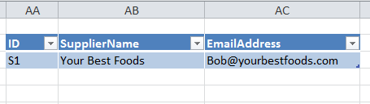

In the previous example workflows you have modified data in an object. In this workflow
you export the model to Excel.
Procedure
- With your modified model open, click Samples >
Export.
- Click Data Model to export the entire model.
- Leave the default value, Relations with Tables,
selected.
- Click Export. The entire data model is downloaded to the
default location on your computer.
When you open the spreadsheet, you can see the object that you added,
Supplier, with the properties and data that you
added to the data model: ID,
SupplierName, and
EmailAddress.
